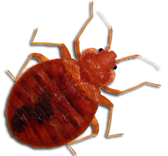

BED BUGS
Bed bugs are small, reddish-brown insects that feed on the blood of humans and animals. They are typically found in and around sleeping areas, such as beds, mattresses, and upholstered furniture. Bed bugs are known for their ability to hide in small cracks and crevices, making them difficult to detect and eliminate.
Bed bugs are not known to transmit diseases to humans, but their bites can cause significant discomfort and skin irritation. The bites are usually in a cluster or a line, and may appear raised and itchy.
Infestations of bed bugs are most commonly spread through travel and the transfer of infested items, such as clothing and luggage. Once an infestation has occurred, it can be challenging to eradicate without professional assistance.
Treatment for bed bug infestations may include pesticides, heat treatments, and vacuuming. Prevention measures include regularly inspecting and cleaning sleeping areas, using bed bug-proof mattresses and encasements, and avoiding the purchase of used furniture or items with unknown origins.
Facebook
Twitter
Instagram